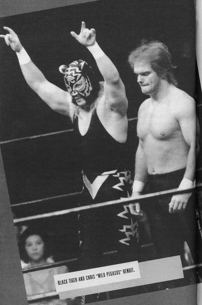

Глава 12
Перевод Александра Суменко для VSplanet.net
Помимо работы в AAA, я летал в Японию примерно каждые 6 недель, работая в каждом туре, куда получалось попасть. Я возвращался домой в Мексику на полторы недели, работал там, а потом возвращался в Японию. В течение двух лет я проводил в Японии 7-8 месяцев в году.
Долгое отсутствие, естественно, негативно сказалось на моем браке. Викки было тяжело одной нянчиться с Шол.
Я едва бывал дома. Возвращаясь из Японии, я колесил по Мексике. Как бы я ни хотел проводить время с семьей, я также знал, что в мои обязанности входит заработка средств, чтобы дома всегда была еда на столе.
Работа в Японии не похожа на пикник. Как беспощаден бы ни был бизнес в Мексике, в японских раздевалках было в два раза тяжелее.
Ирония нашего бизнеса заключается в том, что, на взгляд стороннего наблюдателя, мы соревнуемся в ринге, а на самом деле это единственное время, когда мы работаем вместе. Настоящее соревнование проходит за кулисами, в раздевалке.
Там каждый сам за себя, и это создает весьма трудные условия труда. Каждый рестлер заботится только о себе, и за каждым притаился новичок, стремящийся занять его место. В этом нет ничего подлого, просто так все устроено. Тебе приходится постоянно оглядываться, иначе получишь нож в спину.
Это похоже на фильм «Фирма». Все следят за каждым твоим движением. Единственный способ защититься — быть аккуратным и держаться своей компании.
В Мексике моя фамилия давала мне определенную защиту. Я был сыном Гори Герреро. Я был братом Чаво, Мандо и Эктора. Имя Герреро изначально давало мне определенное уважение. Кроме того, моя семья уже столько времени занималась этим бизнесом, что я встречал родственников и друзей повсюду.
Но в Японии имя Герреро не значило ничего. Вдруг я оказался сам по себе, и многие хотели бы взять верх надо мной. У меня начались проблемы в отношениях с другими рестлерами.
Когда я рассказал о происходящем Мандо, он вспылил и обвинил меня:
— Ты сам ставишь себя в такое положение, брат, — сказал он. — Ты напиваешься до того, что не можешь защищать себя. Ты оказался в клетке со львами, мужик. Если ты продолжишь в этом же духе, они съедят тебя заживо.
Я долго обдумывал слова Мандо и понял, что он прав. С того дня я старался быть максимально незаметным. Я завел нескольких близких друзей — Крис Бенуа, Черный Кот — но, по большей части, старался держаться обособленно.
Я узнал, что лучше всего хранить в раздевалке тишину. Я всегда слежу за тем, что говорю и что делаю, потому что у каждого действия есть последствия. Этот бизнес настолько беспощаден, что любой может взять твои слова и перевернуть их таким образом, что ты будешь выглядеть ужасно. Поэтому я стараюсь избегать таких ситуаций.
Но как бы я ни пытался сторониться проблем, я не мог их избежать. Я веселился, как сумасшедший на каждой вечеринке. Трудно сдерживать себя, когда ты вдали от дома столь долгий период. Через какое-то время одиночество и страхи одолевают тебя. Остается только отрываться по полной.
Многие парни спускали пар, заводя себе подружек в чужой стране, но у меня был роман только с наркотиками и алкоголем, но не с девушками. Мой персонаж («Латинская жара») — это просто персонаж. Настоящий Эдди никогда не был любимчиком девушек. Они не западают на меня. Может, дело в большом носе, не знаю, но я никогда не пользовался особым успехом у женщин.
Была одна японочка, милая и пышная, которая следовала за мной везде. Я называл ее моей маленькой буйволицей. Не поймите меня неправильно — мне нравится признание, но я видел, как бабники разрушают свои браки. Я знал, какие муки причиняет такое поведение жене и был намерен не дать Викки пройти через этот ад.
Поскольку женщины не рассматривались, я напивался каждый вечер. Я был в стельку и становился в таком состоянии злым и тупым. Парни придумали кличку, для меня в пьяном состоянии — Гигант. В такие моменты как будто вся моя внутренняя ярость выплескивалась наружу, и я становился 3-метровым, 300-килограммовым монстром. Я был больше Биг Шоу и в три раза злее.
Поскольку я был часто просто невменяем, в моей жизни было много событий, о которых я узнавал из чужих уст в течение следующих дней. Такую цену приходится платить, когда ты постоянно пьян. Каждая история имела одинаковый сюжет: я напивался и становился Гигантом. Например, однажды ночью мы веселились в баре гостинице, и я нарвался на Дорожного Воина Ястреба.
В юности я был большим фанатом Ястреба. Мой друг Эктор Ринкон и я часто забавлялись на ринге моего отца, изображая Дорожных Воинов, Эктор был Зверем, а я Ястребом. Это был мощный гиммик, и они грамотно его исполняли очень-очень долгое время. Они привлекали зрителей, как никто другой в этом бизнесе. Дорожные Воины, несомненно, останутся в анналах истории, как одна из лучших команд.
Я даже встречался с Дорожными Воинами в то лето, когда в 16 лет поехал во Флориду. Это произошло на супершоу NWA Lords of the Ring на арене Orange Bowl. Они боролись с Барри Уиндэмом и Майком Ротундо за пояса командных чемпионов NWA. Я был настолько впечатлен, что едва не визжал, когда мой брат знакомил меня с ними.
Но в ту ночь в Японии мне было плевать, кто такой Ястреб — я был пьян и искал ссоры. Я начал придираться к Ястребу, но он прямо сказал мне отстать от него. «Отвали от меня, — произнес он, — или я приму меры».
Он дал мне возможность уйти, но я сглупил. Я не хотел, чтобы меня считали слабаком, поэтому толкнул его.
Ястреб был человеком слова. Когда я отвернулся от него, он сдержал свое слово — принял меры. Бам! Прямо мне в затылок. Я упал на задницу, и он пнул меня пару раз для профилактики.
Ястреб был большим мужиком, и несколько его ударов вырубили меня. Брэд Армстронг усадил меня в такси и велел шоферу довезти меня до отеля. Когда я очнулся, то подумал: «Я облажался».
Сначала я был зол и расстроен. Но обдумав все это, я понял, что виноват во всем сам. Потому что я не отступился. За это меня уважают некоторые рестлеры. Из меня могут выбить весь дух, но я не сдамся.
Годами позже мы с Ястребом подружились и провели немало времени в интересных разговорах. Он принял Христа и попытался изменить свою жизнь. Он сказал, что любит меня и всегда жалел о том, что вырубил меня тогда. Я сказал ему, что в этом виноват не он, а моя собственная глупость. Я рад, что у нас состоялся тот разговор. Вскоре Ястреб скончался, став очередной жертвой тяжелой жизни, которую мы ведем. Боже, храни его душу.
Чем больше я напивался, тем больше находил проблем. Будучи вдали от дома, мы искали способы развлечения друг друга. Некоторые рестлеры были отъявленными шутниками.
Розыгрыши являются неотъемлемой частью рестлинга. Опытные парни разыгрывают молодых ребят, что является своеобразным посвящением в бизнес. Когда я был мал, мои братья сдерживались от желания постоянно меня разыгрывать. Они знали, что я был чувствительным мальчиком, и чаще всего оставляли меня в покое.
Естественно, остальные рестлеры не проявляли такого участия. Зачастую шутки безвредны и по-своему смешны. Спрятать багаж нового рестлера или привязать его к потолку в раздевалке — это все равно, что сказать: «Добро пожаловать в клуб».
Но иногда шутки могут оказаться грязными в прямом смысле. Двумя худшими шутниками в Японии были парни из Нэсти Бойз, Брайан Ноббс и Джерри Сэгз. Эти двое жестоко разыграли меня во время одной из моих первых поездок в Японию.
Мы вместе летели из США в Японию. Перед вылетом несколько рестлеров встретили меня в баре аэропорта и выпили со мной. Брайан и Джерри проявили безграничное дружелюбие, но стоило мне отвернуться, и я попался — они подсыпали мне снотворное.
Пока я спал, Ноббс стоял надо мной и произносил фразы, типа: «Я всегда ненавидел твоего братца Эктора» — и шлепал меня по лицу. Потом они сбрили мне брови, остригли челку и вырезали треугольник волос прямо на макушке. Я выглядел, как Франкенштейн!
Это выходит за рамки розыгрыша. Это личное. Нэсти Бойз думали, что это уморительно, но я был вне себя. До сих пор я вспоминаю этот случай с горечью. Сбрить у кого-то брови — это просто жестоко. Мне пришлось выступать перед 18 000 зрителей в Sumo Palace без бровей и лысым. Парни в раздевалке считали это смешным, но им не нужно было выступать в таком виде перед зрителями.
Я не мог винить кого-то кроме себя, ведь я сам выбрал себе такой путь. Я знал, в какой мир вступаю. Если бы я не пил с ними, они не могли бы подмешать в мою выпивку снотворное. Если разыграли бы не меня, то кого-то другого. Розыгрыши — часть рестлинга, и мне пришлось с этим смириться. Если не смирить свою гордость и не проглотить обиду, розыгрыши станут еще более жесткими.
Побывав на той стороне, став жертвой розыгрыша, я никогда не пытался разыграть других. Я знаю, насколько это обидно, и не хочу, чтобы кто-то страдал ради пары минут чьего-то смеха. Я бы не простил себе это. Мне не нужно ранить рестлеров, чтобы получить поддержку от других. Это тупо.
Мне не нравилось, что я не могу защитить от розыгрышей других. Если ты срываешь розыгрыш, то становишься объектом ненависти и, скорее всего, жертвой следующего розыгрыша. Это тоже входит в правила игры. Нельзя встрять со словами: «Эй, мужик, оставь его в покое» — потому что, таким образом, ты нарушаешь традицию.
В таком мире мы жили. Нэсти Бойз просто делали то, чему их научили другие. Возможно, они достигли совершенно нового уровня, но они не делали ничего необычного.
Каких бы недостатков у меня ни было, я считаю себя безобидным парнем. Когда мне угрожают, я бьюсь насмерть, но мне не доставляет удовольствия причинять кому-то боль. Я знаю много людей, которые делают скверные вещи, например, пинают собак, для своего развлечения. Это не мой стиль.
Есть рестлеры, которым нравится работать жестко, причинять настоящую боль противникам. Мне не нравится жестко работать, но иногда приходится это делать. Иногда нужно быть жестким, чтобы заработать уважение.
По мне, рестлеры, которые специально работают жестко, специально пытаются причинить тебе боль, просто глупы. Мы жертвуем на ринге своим здоровьем. Мы пытаемся заработать на жизнь своим семьям. Хочешь быть жестким — иди в UFC, Ultimate Fighting Championship. Когда кто-то доверяет тебе свое здоровье, а ты пользуешься этим, это равносильно насилию. Такое не должно происходить в нашем бизнесе. К несчастью, таких рестлеров предостаточно.
Будучи небольшим рестлером, я встречал таких гадов много раз. Они думают так: «Эдди небольшой. Я легко его уделаю». Когда такое происходит, я перехожу в режим выживания. Я не хочу драться на ринге, но если со мной поступают плохо, я возмещаю это в десятикратном размере.
Я подружился с отличными людьми в Японии, которых считаю своими братьями, среди них — Крис Бенуа и Черный Кот. Одним из моих ближайших друзей до сих пор остается Дин Маленко. Мы встретились во время моего второго или третьего тура в Японию.
У нас был матч, и я был порядком напуган. Я много слышал о Дине, его шут-стиле и умении растянуть оппонента. Этому он научился у отца Бориса Маленко, одного из лучших хилов всех времен и мастера шут-рестлинга.
Дин был тихим и неразговорчивым. Он говорил только о бизнесе: «Приятно познакомиться, что ты хочешь сделать в матче? Ладно, об остальном договоримся на ринге».
Я нервничал перед матчем. Черный Кот заметил это в раздевалке и сказал: «Чего ты нервничаешь? С Маленко легко, он настоящий профессионал».
Естественно, когда мы вышли на ринг, Дин был великолепен. Невероятно прост. Дин гибок, он переливается по рингу, как вода. Он грациозен и делает все с видимой легкостью.
Хотя он был не самой простой личностью, мы с Дином подружились. Мы быстро стали друзьями, и я ценю наши отношения по сей день.
Одной из моих любимых частей работы в Японии была зарплата наличными. Абсолютно новыми 100-долларовыми купюрами, чистыми и хрустящими. Они даже пахли хорошо!
В конце одного из туров я получил зарплату в конверте и, чтобы не забыть его, положил конверт под список вещей. Проснувшись утром, я обнаружил, что, как всегда, опаздываю на самолет. Я спешно собрался и прибыл в аэропорт «Норита» вовремя. Решив накупить сувениров, я обнаружил, что мне не хватает наличных, чтобы расплатиться. Я попытался достать свой конверт и сообразил, что оставил его в отеле!
Мое сердце ушло в пятки. Я принялся копаться в своем багаже, разбрасывая одежду, в надежде, что все-таки засунул конверт в сумку, но я знал, что конверт остался в номере.
Все парни хохотали надо мной. Скотт Нортон положил руку на мое плечо. «Да ладно, друг, такое бывает со всеми», — сказал он.
Скотт предположил, что Черный Кот сможет мне помочь. Я позвонил тому и объяснил, что случилось. Он попросил меня не беспокоиться и пообещал разобраться.
Кот позвонил в наш отель, и, к счастью, горничная нашла мой конверт и принесла его на регистрацию. Кот забрал наличные и перевел мне деньги на счет.
Когда Кот увидел мою зарплату (думаю, тогда это было около 1 000 долларов), он напрягся:
— Это все, что тебе платят? Это неправильно. Я с этим разберусь.
Он сказал, что тысяча — вполне неплохо для первого тура, но потом они должны были поднять мою оплату. Боже храни Кота, после его разговора с руководством я стал получать регулярные прибавки после каждого тура в NJPW.
Мне больно слышать, как обо мне думали рестлеры в те дни, когда я веселился без остановки. Но я понимаю, что не они меня таким сделали. Я сам опустился в эту яму. Вина лежит только на мне.
Больше всего я чувствую стыд. Люди смеются и говорят, что я центр вечеринки, но ведь этот смех за мой счет.
Однажды я напивался в компании рестлеров: Скотт и Рик Штайнеры, Нэсти Бойз, Брайан Пиллман и несколько других.
Мы, как обычно, были навеселе. Нэсти Бойз так напились, что сняли всю одежду. Брайан и Джерри стояли абсолютно голые посреди улицы. Рик Штайнер орал на них, а остальные хохотали от души. Затем, как мне рассказывали, пока продолжалась эта вакханалия, сзади ко мне подошел Скотт Штайнер с зажигалкой и поджег меня. Говорю вам, я вообще этого не почувствовал. Слава Богу, рядом был Пиллман. Он подошел ко мне и спокойно сказал:
— Эм, Эдди? Ты ведь знаешь, что ты горишь?
— Что?! — Я был настолько пьян, что не чувствовал боли.
Брайан, храни Боже его душу, начал шлепать меня по заднице, чтобы потушить огонь! Клянусь, что, проснувшись на следующее утро и увидев свои обгоревшие шорты, я, как ни в чем не бывало, спросил: «Что случилось?»
Пиллман постоянно рассказывал эту историю. Он был потрясающим рассказчиком и умел развлекать собеседников. «Представляете, стоит Эдди, — рассказывал он после того случая, — у него горит зад, а он даже не селит!»

Эдди Герреро и Крис Бенуа